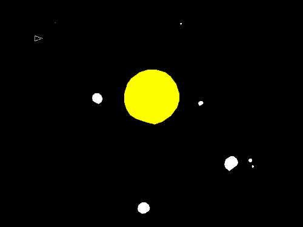
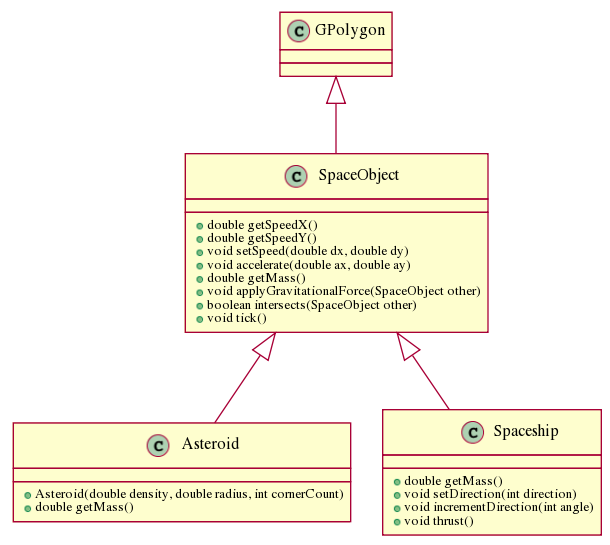

TDT4100, Spring 2012
Exercise 8: Inheritance
Deadline 11. April 2012
The objective of this exercise is to:
- Understand inheritance.
- Use a class hierarchy in an interactive game with a graphical interface
General requirements:
- You must use inheritance in this exercise.
- Your design must contain the classes shown in the inheritance diagram below.
Recommended reading:
- Chapter 9 Inheritance, of Big Java
Introduction
In this exercise, we will focus on inheritance. In Java, classes can inherit fields and methods from other classes.
Through inheritance, you can share common behaviour and reuse code.
The goal of this exercise is to write a simple version of Asteroids with gravity.
A screenshot of a completed game is shown below.
Note that this is just an example on how a completed game may look like, and
that it is completely fine if your solution does not look exactly the same.

Our version of Asteroids supports two kinds of space objects, asteroids and spaceships.
Their behavior will be coded in Java in two classes, Asteroid and Spaceship, respectively.
Since they have some things in common, some of the behavior will be collected in a common superclass called SpaceObject.
Briefly, the concepts SpaceObject, Asteroid and Spaceship have the following behavior.
- Space objects have a (possibly irregular) shape (outline) defined by a polygon. Hence SpaceObject inherits from GPolygon.
- Space objects have a speed (a vector) that may change (i.e. acceleration) due to forces.
- The forces are from mutual gravitational pull and from thrusters (spaceships only).
- All space objects have a mass, but how it is computed depends on the kind. The mass of a space object should of course affect how forces accelerate it.
- Asteroids are solid object with a certain sizes (radius) and density that float around in space.
- Spaceship also float around in space, but the user can control it by changing its direction and using its thruster for acceleration
The figure below illustrates the inheritance hierarchy, and also shows the methods that implement the behavior.

We suggest implementing these classes in the order SpaceObject, Asteroid and Spaceship. To help you test each of them,
we provide three classes that can be used to test each of them:
- AsteroidsStep1 creates three SpaceObject instances with specific shapes, locations and speed that make sure they collide.
When they intersect their color will change.
- AsteroidsStep2 creates a lot of small Asteroid instances and one big and dense one corresponding to the sun.
The asteroids should float around and change their direction due to gravitational pull.
- AsteroidsStep3 builds on Asteroids2 and adds a Spaceship instance that you make control with the arrow keys.
Note that you may have to click in the window to activate the keyboard.
You should study each of these classes and their common superclass Asteroids, to understand how they
use and test the other classes. Below you'll find a more detailed descriptions of SpaceObject, Asteroid and Spaceship.
SpaceObject (50+ points)
Space objects have a speed (a vector) that may change (i.e. acceleration) due to forces.
The forces are from mutual gravitational pull and from thrusters (spaceships only).
All space objects have a mass, but how it is computed depends on the kind. The mass of a space object should of course affect how forces accelerate it.
- The SpaceObject should inherit from GPolygon, and hence may depend on and utilize its methods.
- The speed of a SpaceObject must be encapsulated by the getSpeedX(), getSpeedY() and setSpeed(double, double) methods.
In addition, there should be an accelerate(double, double) method for causing a relative change to the speed.
- The getMass() method can return any constant value (use 0, if you want them to be unaffected by gravitational pull).
- The tick() method is continuously called to simulate proper movements. Calling tick() should move the SpaceObject based on its speed (vector).
- The intersects(SpaceObject) method should return true if this SpaceObject intersects the other SpaceObject. We propose two ways of testing this,
that utilizes the contains method inherited from GPolygon. A simple solution is to test whether the one of the corners of the bounding box
(as reported by getBounds()) of the other SpaceObject is inside this SpaceObject. A more complex solution (giving 10 extra points) is to test whether one of the corners
of the other SpaceObject's Polygon (as reported by getPolygon()) is inside this SpaceObject. In either case, you should think of what happens if
a very small SpaceObject enters a very big one between two of its corners. The AsteroidsStep1 has been carefully designed to test whether you handle this correctly!
- The applyGravitationalForce() method in SpaceObject should use the formula for gravitational pull to accelerate itself.
Note that it should not move the SpaceObject, since this is the role of tick()!
Test with the AsteroidsStep1 class. It creates a few space objects that move across the screen. When two objects collide (intersects) they will become red.
Asteroid (25 points)
- The Asteroid class should inherit from SpaceObject.
- It should be possible to set the density, radius and number of corners when creating an Asteroid,
i.e. new Asteroid(1, 5, 10) should create an asteroid with density=1 and radius=5 having 10 corners.
Hint: The method addPolarEdge(radius, angle) inherited from GPolygon is useful for adding corners.
- The mass of an asteroid must be computed from its size and density (remember the formula?)
Test with AsteroidsStep2. It creates a lot of smaller asteroids and big one, that should affect each other (and collide).
Note: When the objects get really close to each other they will get enormous speed because of dividing by a small number r. Don't worry about this.
Spaceship (25 points)
- The Spaceship class should inherit from SpaceObject.
- A spaceship has constant mass. Find a value suitable for the simulation.
- A spaceship has a direction (an angle between 0 and 360) that can be set to an absolute value with setDirection(int) and relatively with incrementDirection(int).
- The thrust() method should accelerate the Spaceship (but not move it).
Test with AsteroidsStep3. It builds on AsteroidsStep2 and adds a spaceship that can be controlled with the keyboard. Note that you may have to click in the window to activate the keyboard.
All the features mentioned earlier should work after step 3. Feel free to experiment with your game and try to make it even nicer.